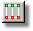
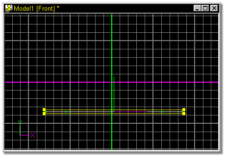
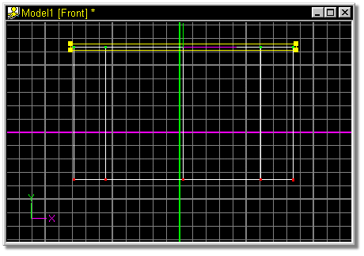

The extrude function is performed on a group of control points. Once a group
has been selected, click the Extrude button, then press and hold the mouse
button inside the yellow group manipulator box. Drag the mouse to where the
extrusion is to be placed then release the button to complete the procedure.
The default keyboard shortcut key for Extrude is E.
Click a point along the spline to be extruded, then press the


Drag the mouse to where the extrusion is to be placed then release the button to complete the procedure.
The result:

Related Topics:
Adding Control Points
Attaching Control Points
Detach Point
Break Spline
Delete Control Point
Insert Control Point
Peak
Magnitude
Bias
Group Mode
Lasso Mode